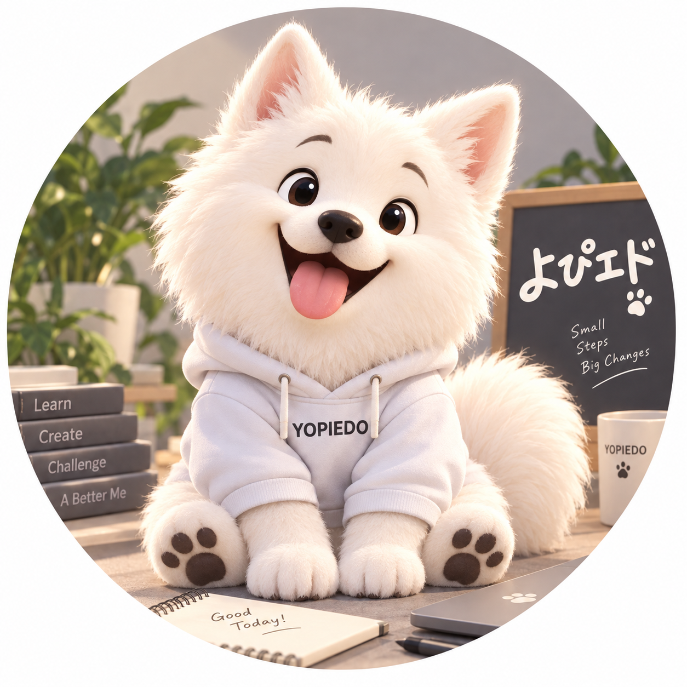
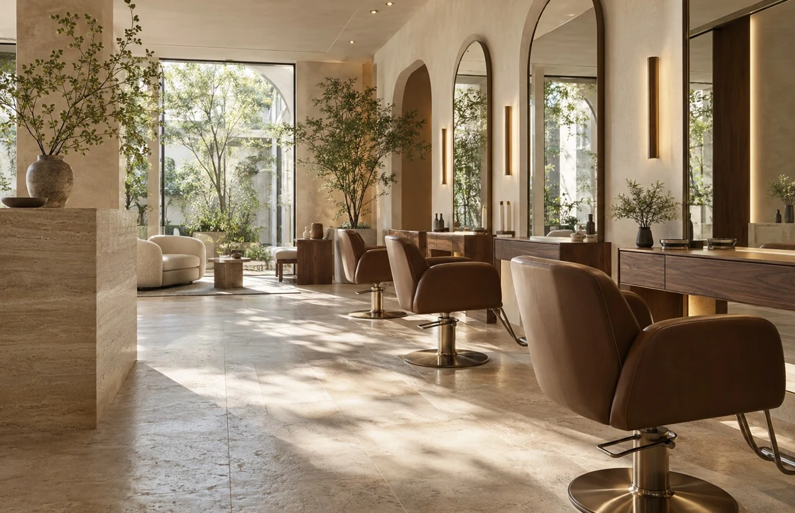
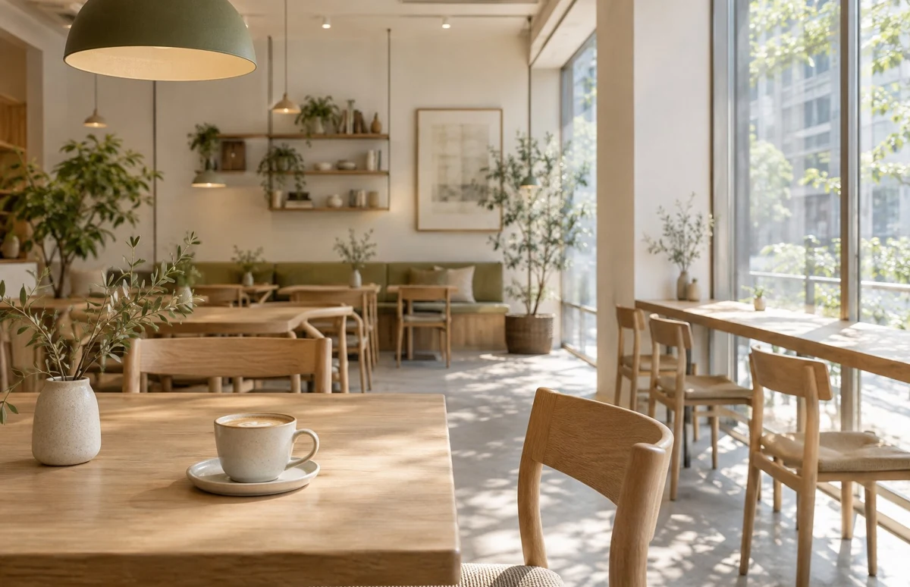
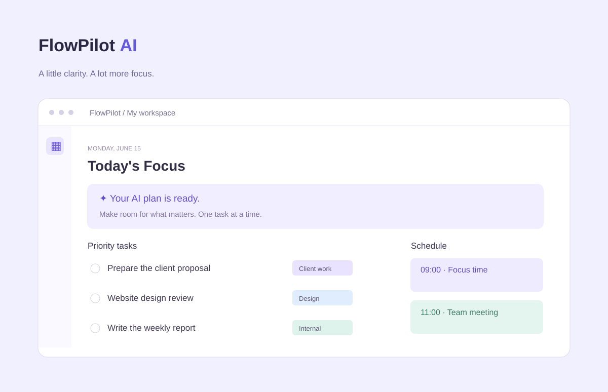

Webサイト制作
事業やお店の魅力が伝わるサイトを、構成から制作。必要な情報と、相談・来店につながる導線を整えます。
企業 / 店舗 / 個人事業主THOUGHTFUL DESIGN, PERSONAL APPROACH
個人事業主・小規模企業のためのWebサイト制作
まだ曖昧なイメージも、少しずつ。
丁寧な対話と目的に合わせた設計で、
あなたの事業に寄り添うサイトをつくります。
01 / ABOUT ME
「こんなことをしたい」を、
一緒に整理するところから。
カスタマーサポートや社内IT・情報システムの業務で、相手の要望を聞き取り、課題を整理し、分かりやすく伝える仕事を経験してきました。
Web制作でも大切にしているのは、訪れる人の目線。「誰に、何を伝えたいか」を一緒に考え、構成からデザイン、制作まで形にしていきます。

02 / SERVICE
新しく事業を始めるときも、
伝える場所が必要になったときも。
目的を整理するところからお手伝いします。
事業やお店の魅力が伝わるサイトを、構成から制作。必要な情報と、相談・来店につながる導線を整えます。
企業 / 店舗 / 個人事業主サービスの特徴や利用するメリットを整理。訪れる人が内容を理解し、次の一歩を選べるページをつくります。
サービス紹介 / 新規事業 / LPスマートフォンでも読みやすく、迷いにくい構成に。更新の必要性に応じて、WordPressを想定した設計もご相談いただけます。
レスポンシブ / 更新を見据えた構成HTML / CSS / JavaScriptを基本に制作。AIや制作ツールも補助として活用し、表現と動作は人の目で確認します。
03 / SELECTED WORKS
業種ごとの目的を考えたデザインサンプル。
構成や表現の工夫をご覧ください。
CONCEPT WORKS — すべて架空の自主制作です。
実際のクライアントワークではありません。

上質さと親しみやすさを両立した美容室サイト。コンセプトからギャラリー、メニュー、スタッフ、アクセス、予約まで、店舗の世界観と予約導線を丁寧につなぎました。
IT導入支援・業務効率化・運用サポートを提供する架空IT企業のコーポレートサイト。企業としての信頼感と、サービス内容の分かりやすさを重視しました。

コーヒーとブランチをテーマにしたカフェサイト。メニュー、店舗の雰囲気、ギャラリー、アクセスを、写真と余白で心地よく伝える構成にしました。

AIを活用したタスク・ワークマネジメントSaaSのLP。サービス概要、機能、AIアシスタント、料金、FAQからCTAまで、利用を後押しする流れを設計しました。
04 / MY APPROACH
サイトをつくる時間も、
気持ちよく、分かりやすく。
いきなり制作に入らず、目的・届けたい相手・イメージを確認。認識を揃えてから進めます。
IT業務で培った説明と問題整理の経験を活かし、Webに不慣れな方にも分かる言葉でお伝えします。
AIや制作ツールで作業を効率化。その分、構成や文章、使いやすさの確認に時間をかけます。
途中のご質問や修正のご相談にも、一つずつ対応。確認のタイミングを共有し、納品まで進めます。
05 / WORKFLOW
各段階で方向性を確認します。
分からないことは、その都度ご相談ください。
事業のこと、サイトの目的、ご希望をお聞きします。
必要なページや掲載内容、デザインの方向性を整理します。
確認した内容をもとに、PC・スマートフォンに対応した形へ。
実際の画面を見ながら、文章や表示、動作を確認・調整します。
合意した形式でお渡しし、必要な取り扱い方法をご案内します。
06 / FAQ
はじめてのサイト制作でも、
気負わずお話しください。
はい。必要なことを順番に確認し、できるだけ専門用語を使わずにご説明します。分からない点は、そのままお聞かせください。
もちろんです。事業の内容や届けたい相手を伺いながら、必要な情報と方向性を一緒に整理します。参考サイトがあれば共有いただけると助かります。
はい。PC・タブレット・スマートフォンの画面幅に合わせて、読みやすさと操作のしやすさを調整します。
はい。確認の段階で修正のご希望を伺います。対応範囲や回数は、ご依頼前に相談して決めます。構成の大きな変更は、内容と進行への影響を確認してご案内します。
お手元にある資料や写真をご共有ください。不足している場合は、文章の整理や素材の準備方法からご相談いただけます。素材の利用条件も確認しながら進めます。
LET’S CREATE SOMETHING MEANINGFUL
まだ、はっきりとした形がなくても大丈夫です。
まずはクラウドワークスから、お気軽にご相談ください。